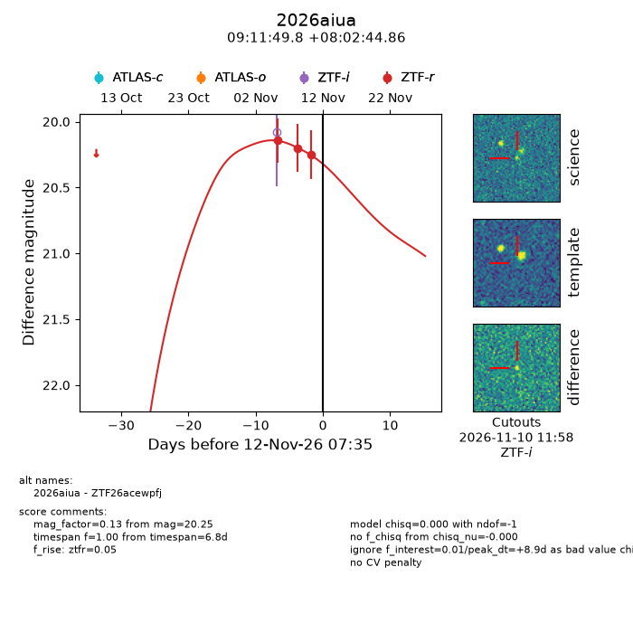
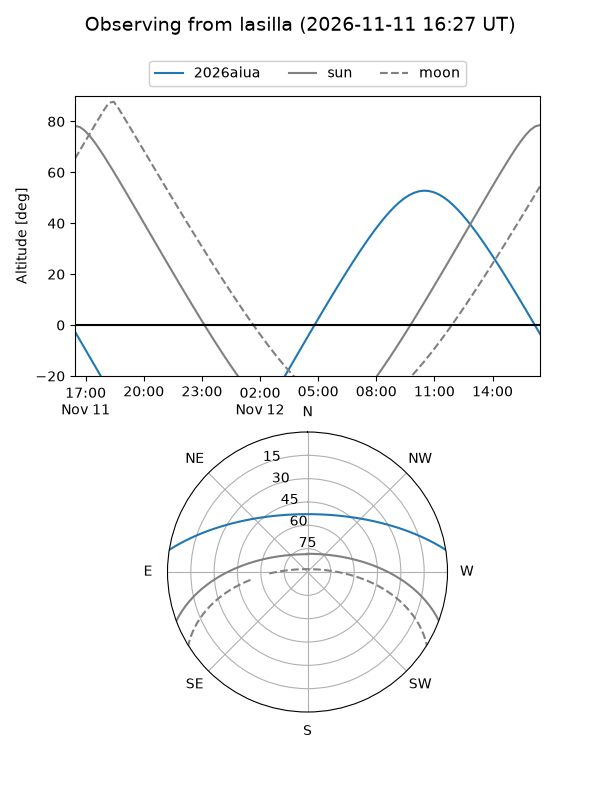
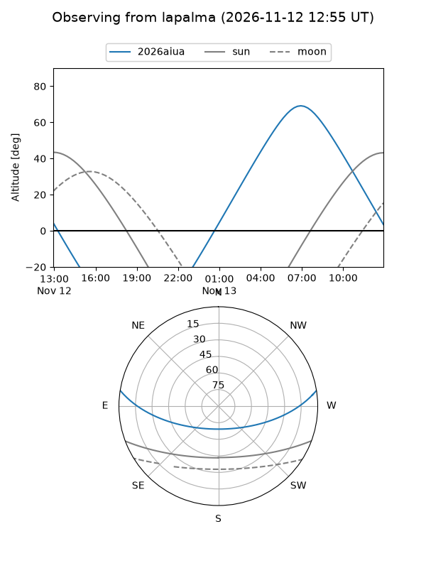
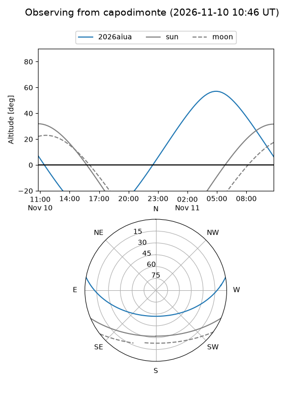
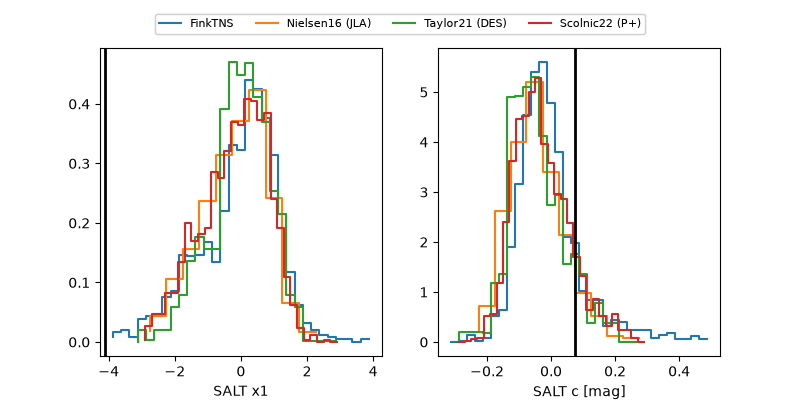

2026aiua
Target 2026aiua at 2026-11-12 07:38
Aliases and brokers:
FINK-ZTF: ztf.fink-portal.org/ZTF26acewpfj
Lasair-ZTF: lasair-ztf.lsst.ac.uk/objects/ZTF26acewpfj
ALeRCE-ZTF: alerce.online/object/ZTF26acewpfj
YSE-PZ: ziggy.ucolick.org/yse/transient_detail/2026aiua
TNS name: wis-tns.org/object/2026aiua
Direct TNS query: direct search
alt names
ZTF26acewpfj (ztf,fink_ztf)
2026aiua (tns,yse)
Coordinates:
equatorial (ra, dec) = 137.9574,+8.04580
equatorial (HMS+DMS) = 09:11:49.77,+08:02:44.86
galactic (l, b) = (222.3951,+34.78549)
Flags:
peak dt: +8.9
Photometry:
last ztfr=20.25
3 ztfr detections
Lightcurve

Visibility



Additional plots
